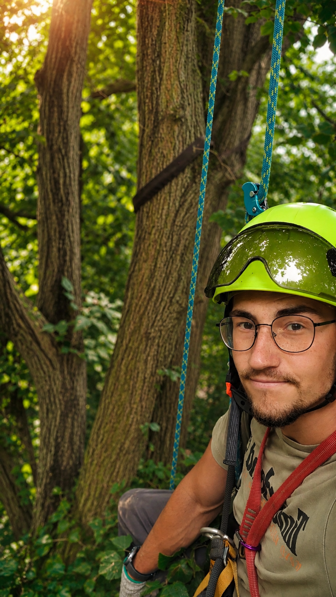
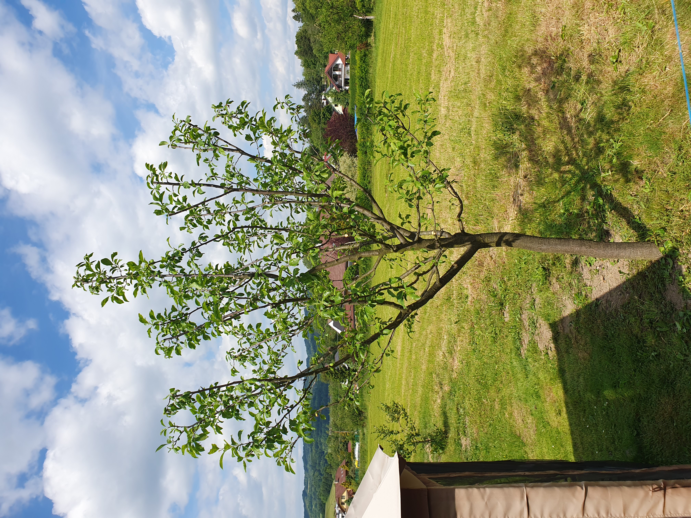
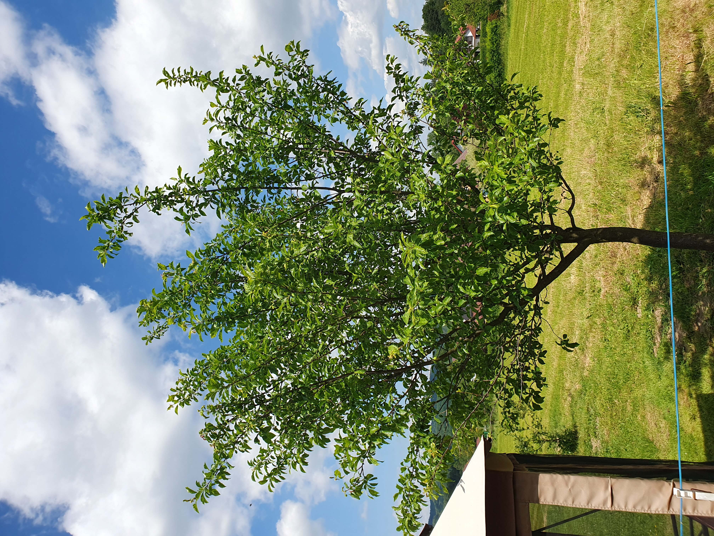

Arboristika, rizikové kácení stromů, komplexní péče o ovocné stromy, inventarizace dřevin

Zdravotní, bezpečnostní a redukční řezy pro stabilitu a dlouhověkost stromů v souladu s moderními standardy.
Bezpečné kácení v těsných podmínkách u budov a vedení, včetně postupného kácení pomocí lanové techniky.
Kompletní servis pro váš sad či zahradu: odborná výsadba, správné zakládání koruny, výchovné řezy mladých stromů a udržovací zdravotní řezy pro bohatou úrodu.
Odborné a komplexní zmapování všech stromů a keřů v daném území. Slouží například jako podklad pro úřady ochrany přírody k vydání povolení ke kácení.
Posuňte jezdec uprostřed a podívejte se na rozdíl před a po zásahu.

Po řezu
Před řezem